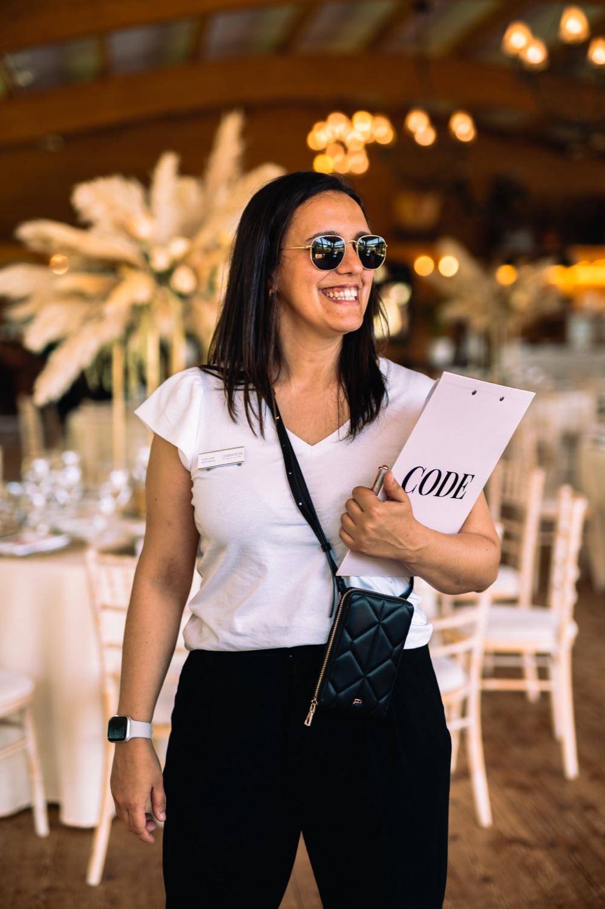

CODE
Certificação em Organização e Decoração de Eventos

Torna-te profissional de organização de eventos e cria o teu negócio de eventos do zero com um
Queres criar um negócio alinhado com as tuas paixões e talentos?
Queres criar um negócio que te dê liberdade de tempo e dinheiro?
Queres criar um negócio que te permite ser reconhecida e valorizada como uma Profissional de Organização e Decoração de Eventos?
Como é ser uma Profissional de Organização e Decoração de Eventos?
É partilhares com o mundo a tua paixão e o teu talento enquanto aumentas a tua liberdade de tempo e dinheiro mudando completamente a tua vida.
Eu sou a Adriana e tornar-me PODE permitiu-me passar a ter tempo e dinheiro para fazer o que mais gosto e poder estar junto dos que mais amo.
Ao contrário de mim que comecei sem saber nada, tu tens a oportunidade de começares com toda a confiança e segurança sabendo exactamente os passos a dar para criares um negócio de eventos de sucesso que te enche o coração e te vão fazer sentir feliz e realizada.
Decorar é amar o outro e a nós mesmos. Ao criar eventos estás a impactar a vida de pessoas especiais criando memórias de alegria e felicidade que ficarão guardadas para sempre.
Afinal o que é necessário para criar um Negócio de Eventos de Sucesso?
São 4 as fases principais. Avalia em que fase estás?
Cria, Decora, Organiza e Planeia Eventos
Esta fase é fundamental para garantires que tens o conhecimento e confiança necessário para organizares e decorares eventos. É nesta fase que vais saber passo a passo como organizar e decorar as eventos dos teus futuros clientes.
Estrutura o teu Serviço de Decoração
Esta fase é fundamental para garantires que crias um serviço certo para ti e para o teu cliente é nesta fase que defines o teu público, o teu preço e quem és tu como PODE. Esta é a fase que o teu serviço fica pronto a ser comercializado.
Divulgar
Esta é a fase em que preparas o mercado para receber o teu serviço como PODE e crias a necessidade de compra. É a fase onde começas a criar autoridade e a criar a expetativa do que tens para oferecer.
Vender
Esta é a fase onde apresentas o teu serviço ao teu cliente, em que defines as formas de pagamento e todos os termos e condições do teu negócio. É também a fase onde dinamizas as tuas festas, recebes feedback e preparas futuras festas.
E se pudesses ter uma orientação passo a passo em cada uma destas fases?

Acesso durante 12 meses a um passo a passo, para teres um negócio de eventos, pronto e a funcionar. E um método de trabalho, com todos os passos, para organizares e decorares eventos como uma decoradora de eventos profissional!
O programa completo
O que inclui?
9 missões práticas passo a passo com videos e pdfs de apoio.
6 meses de acompanhamento com sessões mensais ao vivo na criação dos teus eventos e do teu negócio.
Acompanhamento da Mentora com grande experiência em organização e decoração de eventos.
Comunidade Exclusiva para partilha de experiências, aprendizagens e evolução.
Modelos (excel, word, pptx) de apoio à organização e decoração das tuas festas, e criação do teu negócio (modelo de proposta, contrato, ordem de serviço, planos de mesas, e muito mais).
Recomendação de plataformas, softwares, aplicações, fornecedores, materiais e tudo o que precisas para criares o teu negócio de eventos de sucesso.
Acesso imediato e completo durante 12 meses. Formato 100% online.
Atenção
Isto não é um curso.
É um treino, onde a cada semana vais aplicar todos os ensinamentos e no final terás realizado pelo menos 1 evento e o plano do teu negócio realista, estruturado e validado, para lançares o teu negócio ao mundo, captar clientes e vender Eventos.
9 Missões
O que vais aprender
Desenha o teu Evento
Nesta missão prática vais definir as variáveis do teu evento. Vais descobrir o teu estilo enquanto decoradora de eventos e definir o design do teu evento.
Decora o teu Evento
Nesta missão prática vais definir toda a decoração do evento que queres criar e validar as tuas ideias. Vais ainda criar pormenores originais e criativos que vão tornar os teus eventos únicos, cobiçados e que causam o wow factor.
Organiza e Planeia o teu Evento
Nesta missão prática vais desenhar toda a jornada do teu evento. Vais organizar todos os pormenores e planear o grande dia.
Realiza o teu Evento
Nesta missão prática vais ver todas as tuas ideias tornarem-se realidade.
Estrutura o teu Negócio
Nesta missão prática vais definir o preço dos teus eventos, fazer orçamentos e construir um negócio viável.
Diferencia-te como PODE
Nesta missão prática vais definir quem és tu como organizadora e decoradora de eventos e como ser reconhecida.
Mostra os teus Eventos ao Mundo
Nesta missão prática vais definir os elementos para comunicares de forma irresistível os teus eventos ao mundo.
Oferece o teu Serviço
Nesta missão prática vais aprender as estrategias para apresentares a tua oferta irrecusável. Para que os teus clientes façam fila para ter uma festa tua.
Vende Eventos Irresistíveis
Nesta missão prática vais vender eventos como uma profissional.
Sem risco
Recebes uma garantia de 15 dias sem risco.
No final desses 15 dias, terás acesso às duas primeiras missões práticas. Ou seja, tens a oportunidade de experimentar duas semanas inteiras de conteúdos ANTES de assumires um compromisso final. Se não te sentires totalmente confiante e satisfeito com os ensinamentos transmitidos, basta entrares em contato, e o teu investimento será devolvido, sem questões.
E mais…
Vais ter direito a todos estes bónus
Comunidade Exclusiva
Assim que te juntas à Comunidade Exclusiva de Alunas do CODE vais ter acesso a organizadoras e decoradoras de eventos com quem vais poder trocar ideias, partilhar experiências, desafios e muito mais.
Decoração com Balões
Neste bónus vou-te guiar passo a passo na criação de um arco de balões, com acesso a lista de fornecedores, materiais, equipamentos e ainda vais ficar a saber as principais bases para criar várias decorações com balões.
Papelaria Personalizada
Neste bónus vou-te guiar passo a passo na criação da papelaria personalizada para os teus eventos, com acesso a todos os meus modelos de corte pré-feitos.
Decoração Floral
Neste bónus vou-te guiar passo a passo na criação de arranjos e decorações florais para os teus eventos: escolha de flores, técnicas de montagem e fornecedores de confiança.
Fotografia para Eventos
Neste bónus vou-te ensinar a fotografar os teus eventos como uma profissional, para mostrares o teu trabalho com imagens irresistíveis que atraem clientes.
Lança o teu Negócio
Neste bónus vou-te acompanhar no lançamento do teu negócio ao mundo: os primeiros passos para captar clientes e começar a vender eventos com confiança.
Testemunhos
O que as profissionais têm a dizer do CODE…
O que o CODE mudou na minha vida? TUDO!!!! Passei de mera amadora para uma profissional na área das festas. Hoje tenho o meu negócio e continuo a aprender e a evoluir com a ajuda da Adriana! É uma pessoa direta e objetiva. Revela-nos todos os segredos do mundo das festas e faz-nos acreditar em nós próprias. E o mais importante de tudo é que nos ensina a valorizarmos o nosso trabalho! Obrigada por estares ao meu lado nesta caminhada… ❤️💪🍀😘
Joana Falé
Quero que saibas que estarei sempre ao teu lado.
SIM, há uma quantidade significativa de coisas que deves fazer e implementar no CODE.
SIM, terás momentos em que te vais sentir completamente fora da tua zona de conforto.
Mas eu posso GARANTIR-TE!
Desde que estejas disposta a investir algumas horas por semana e a procurar ajuda sempre que precisares, não há forma de não teres resultados.
Se chegaste até aqui, tenho a certeza de que realmente desejas sentir que conquistaste os resultados que podem mudar a tua vida. Neste momento só queres ter a certeza absoluta de que todo o esforço investido na execução do plano te aproximará do resultado final.
E essa é a minha grande promessa. Nunca desperdiçarás tempo ou energia, irás sentir em todos os momentos que o que estás a fazer te está a aproximar dos resultados que desejas no teu negócio de eventos.

Quem é a Adriana